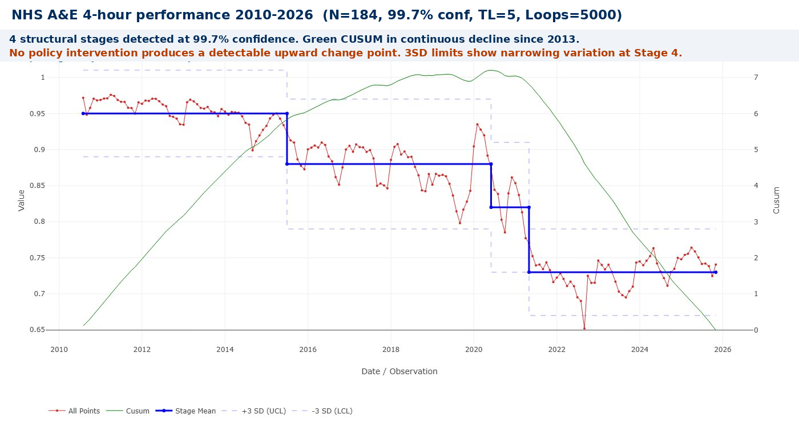
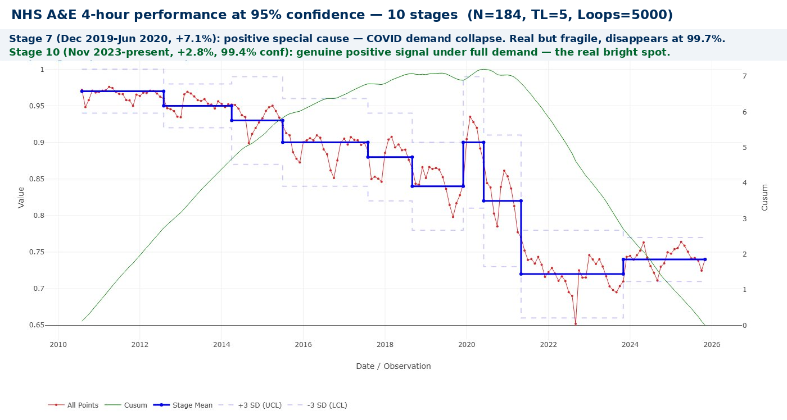
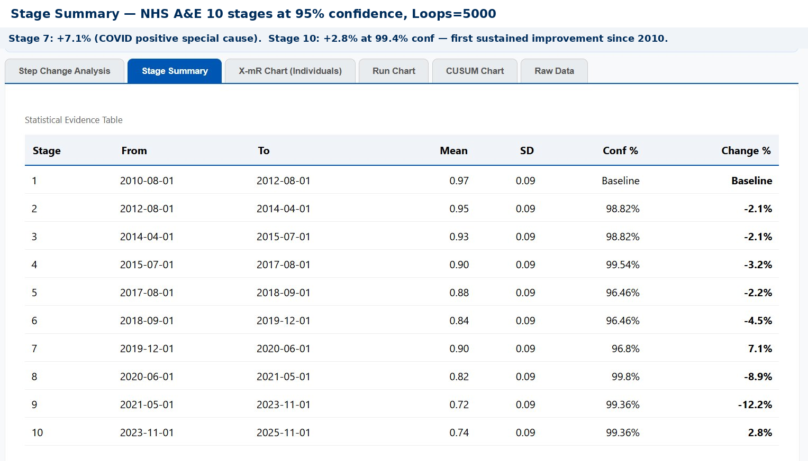

Why Nothing Has Worked: NHS A&E and the Promise That Wasn’t Kept
In January 2000, Tony Blair announced the four-hour target on the Today programme. Patients would be seen, treated, and discharged within four hours. No exceptions. Twenty-five years later, performance is worse than when he made the promise. Bootstrap CUSUM applied to 15 years of monthly data shows not one policy intervention has produced a detectable structural improvement. Deming predicted this in 1982. His question was three words: by what method?
- Understand why 25 years of NHS A&E improvement programmes have produced no detectable structural change.
- See what Bootstrap CUSUM reveals across 184 months of monthly performance data.
- Identify what a genuine improvement signal would need to look like — and how to tell it from noise.
- Apply the same analysis to your own trust’s data.
Same Data, Three Charts, Three Very Different Stories explains what the green CUSUM line means and why it detects structural change that other charts miss — including a step-by-step guide to reading the chart. Takes 5 minutes and makes every chart in this article easier to read.
Read above first 📚 Glossary — CUSUM, Deming, Meadows, Joiner, PDSA and more☰ Table of Contents — click to expand or collapse
- The target that defined a generation of NHS management
- What Bootstrap CUSUM reveals: four stages of structural decline
- Deming’s critique: the target without a method
- Where is the real constraint? The action is not where the problem appears
- How Bootstrap CUSUM could help NHS managers right now
- How long before a policy change shows up in the data?
- Is the problem really inappropriate attendance?
- Finding the bright spots: Bootstrap CUSUM at Trust level
The target that defined a generation of NHS management
The four-hour target had been announced four years earlier, in 2000, as a commitment rather than a policy detail — a prime ministerial promise made on live radio. When it was formally introduced in 2004, the standard was set at 98%: virtually every patient attending accident and emergency should be admitted, transferred, or discharged within four hours of arrival. By 2005–06, the target was being met. It appeared to work.
In 2010, the target was relaxed from 98% to 95%. In July 2015 it was missed nationally for the first time and has not been met since. In 2022 an interim standard of 76% was introduced. In 2023–24 planning guidance a new “operational standard” of 78% was set alongside the official 95% target. In April 2026, performance stood at 76.9%.
Twenty years of targets. Twenty years of policy reviews. Twenty years of revised standards. And a system that today sees fewer than 4 in 5 patients within four hours — a performance level that would have been considered a national crisis in 2006.
W. Edwards Deming, whose ideas transformed post-war Japanese manufacturing, predicted this pattern exactly. His question, which he applied to every management target he encountered, was three words: “By what method?”
What Bootstrap CUSUM reveals: four stages of structural decline
The chart below applies Bootstrap CUSUM step-change analysis to 184 monthly observations of NHS A&E performance from August 2010 to February 2026. The Y-axis is the percentage of all attendances seen within four hours. The data is freely available from NHS England and can be uploaded directly to StepChangeAnalysis.com — the analysis shown here required approximately fifteen minutes of preparation.
📊 What is a Bootstrap loop? The Bootstrap method works by repeatedly resampling the data — taking hundreds or thousands of random samples from the same dataset and testing whether candidate change points hold up across those samples. Each resample is one “loop.” A change point that appears in 95% of 1000 resamples is declared at 95% confidence. More loops means more rigorous testing — and more stable results. With a relatively low signal-to-noise ratio (SD = 0.09), 1000 loops produces unstable results on this dataset: the number of stages detected varies between runs. Setting Loops to 5000 stabilises the analysis consistently. All charts in this article use 5000 loops. This is the same finding documented in the Hydrogen Plant article — for datasets with marginal boundaries, 5000 loops is the minimum for reliable results.

Four statistically distinct stages emerge at 99.7% confidence — less than a 1-in-370 chance that any boundary is a false alarm. Mapped against the policy record, with an important caveat: there is typically an 18–24 month lag between a policy intervention and any detectable CUSUM signal. Policies that appear to have failed may simply not have had sufficient time to take effect before the next intervention was layered on top.
| Stage | Period | Mean | What was happening — and the capacity question |
|---|---|---|---|
| 1 | 2010–2015 | ~95% | At target. But this stability deserves scrutiny. Demand was rising throughout this period — Type 1 attendances grew by around 10% between 2010 and 2015. Performance held because capacity broadly matched demand: bed numbers had not yet fallen significantly, social care was still reasonably funded, and GP access was adequate. This raises the fundamental question: was the 95% target ever a sign of a well-designed system, or simply a sign that the system happened to have enough slack to absorb rising demand? The CUSUM shows a flat mean — but the CUSUM of underlying capacity was already declining. |
| 2 | 2015–2020 | ~88% | First structural break. Target missed nationally July 2015, never recovered. Austerity cuts to social care from 2010 onwards reached their full effect on hospital discharge flow by 2015 — a 5-year lag between the policy (social care funding cuts) and its detectable consequence (A&E performance collapse). The NHS Five Year Forward View (2014) and subsequent Long Term Plan (2019) both proposed system-level solutions but neither was accompanied by the social care investment required to move the constraint. By 2019, January performance had fallen to 84.4% — worse than any previous recorded month. |
| 3 | 2020–2022 | ~82% | COVID and immediate aftermath. Attendances fell 37% during the first wave as people avoided hospitals. Performance briefly improved — a false positive caused by fewer patients, not a better system. When demand returned it came back harder: patients who had delayed care returned with more advanced conditions; the elective backlog drove complications to A&E; infection control measures reduced effective bed capacity. The system emerged from COVID structurally weaker than it entered it. |
| 4 | 2022–2026 | ~73% | Post-COVID structural collapse, then first signs of stabilisation. December 2022: first month where over half of all patients waited more than four hours. Social care blockage reached its peak — 13,700 beds per day occupied by patients ready for discharge. From late 2023 a modest improvement begins, detectable at 95% confidence as Stage 10 in the detailed analysis. The 3SD limits narrow at this stage — both mean and variation improving simultaneously, the hallmark of genuine process stabilisation. |
This must be read with one important caveat: genuine policy improvements typically take 18–24 months to produce a detectable CUSUM signal. It is possible that some interventions were beginning to work when the next government or the next policy review cancelled or replaced them. The CUSUM cannot distinguish between a policy that failed and a policy that was abandoned before it could succeed. What it can say with confidence is that no sustained structural improvement has yet emerged from the data.
Stage 3 (COVID) deserves a specific note. Attendances fell to below one million in April 2020 — 42% lower than the previous year. Performance improved because there were far fewer patients, not because the system had improved. Stage 4 is substantially worse than Stage 2 before COVID. The pandemic revealed and accelerated a pre-existing structural failure; it did not cause it.
Deming’s critique: the target without a method
Deming’s central argument, in Out of the Crisis (1982), is that a result is the output of a process, and you cannot sustainably change a result without changing the process that produces it. Setting a numerical target for the result, without changing the process, produces one of two outcomes: nothing, or distortion.
📝 Deming’s four criticisms applied to NHS A&E
“A numerical goal without a method is nonsense.” — W. Edwards Deming, Out of the Crisis (1982)
1. By what method? Setting a goal of 95% is useless unless management also provides the beds, social care capacity, and primary care access needed to achieve it. The question is not what the target is. The question is: by what method will you get there?
2. Distortion and gaming. Research found a sharp spike in patients discharged in the final ten minutes before the four-hour threshold — more than 10% of all patients in that narrow window. The target was met; the system was managed around the measurement point rather than around patient care.
3. Management by fear. A&E staff working under a target influenced by social care capacity, bed availability, and GP access — factors entirely outside their control — experience exactly the management by fear Deming identified. The target is breached; the blame falls on the department that is visible, not the system that is broken.
4. The target moved rather than the process improved. 98% in 2004. 95% in 2010. 76% interim in 2022. 78% operational in 2024. Each time performance fell, the number moved. The process did not change. This is the clearest possible illustration of Deming’s point.
Where is the real constraint? The action is not where the problem appears
Deming tells us that targeting outputs without improving processes is futile. Eliyahu Goldratt’s Theory of Constraints adds a sharper question: which process? In any system there is always one binding constraint — one weakest link — that limits the throughput of the whole. Improving anything else is largely wasted effort until you identify and address that constraint.
In NHS A&E, the evidence consistently points to a constraint that is not in A&E at all. An average of 13,700 hospital beds every day in early 2025 were occupied by patients clinically ready for discharge but with nowhere to go — no care home bed confirmed, no domiciliary care package in place. Each of those beds is a bed that cannot receive an admission from A&E. Each blocked admission is a patient whose four-hour clock keeps running. Each breach is counted against A&E performance — against the department where the problem is visible, not against the social care system where the constraint lies.
⚠️ The action is not where the problem appears
This is one of the most persistent errors in systems management: treating the symptom as the cause. A&E departments are not failing because they are badly managed. They are failing because they are the most visible and measurable part of a system whose real bottleneck is distributed across thousands of care home beds, domiciliary care packages, and social work assessment backlogs that never appear in the NHS performance dashboard. Targeting A&E performance without addressing social care is managing the output while ignoring the constraint that produces it.
The same logic extends upstream. GP access failure drives patients to A&E as the first accessible point of care. Mental health crisis services that require an A&E assessment as gateway mean A&E functions as the mental health system of last resort. The elective backlog drives patients to A&E with complications from delayed procedures. Each is a constraint in a different part of the system whose consequences accumulate at the one measurement point where they are counted: the four-hour clock.
Goldratt’s five focusing steps applied to NHS urgent care would start, and largely end, with social care discharge capacity — because until the 13,700 daily blocked beds figure falls substantially, improving anything inside A&E is secondary. The constraint must be identified before it can be addressed. Twenty years of policy have addressed the output metric. The CUSUM shows the result.
How Bootstrap CUSUM could help NHS managers right now
The CUSUM applied in this article was produced using freely available NHS England data and the free tool at StepChangeAnalysis.com. No specialist software, no statistician, no data submission. Fifteen minutes of preparation.
The same approach is available to any NHS Trust, clinical directorate, or integrated care board. The question Bootstrap CUSUM answers is not “are we meeting the target this month?” — that is answered by the monthly performance report and is almost always the wrong question. The question CUSUM answers is: “has the underlying performance of this process structurally changed — and when?”
📊 What Bootstrap CUSUM adds that monthly reporting cannot
It distinguishes structural change from common cause variation. Winter seasonal dips are common cause — predictable and systemic, not a signal of structural deterioration. A Bootstrap CUSUM boundary dated to a specific month is a structural change — the process has genuinely moved to a different level. Monthly reports cannot make this distinction. CUSUM does it automatically.
It dates interventions precisely. If a new discharge-to-assess programme, a GP streaming pathway, or a social care investment actually improves A&E flow, Bootstrap CUSUM will detect the change point and date it within a few weeks. No intervention has yet produced a detectable change in the national data. A Trust that implements one can now know, objectively, whether it has worked — not from anecdote, but from statistical evidence.
It identifies where in the system the change occurred. Applied not just to A&E performance but to discharge rates, bed occupancy, and GP referral rates simultaneously, Bootstrap CUSUM can show which upstream constraint moved first — and whether the A&E improvement followed it.
It is transparent and reproducible. The NHS England time series is publicly downloadable. The analysis can be reproduced by any Trust, commissioner, journalist, or patient group in minutes. That transparency is itself a form of accountability that monthly target reporting — with its political incentive to manage the number — cannot provide.
Deming argued that you cannot manage what you cannot understand, and you cannot understand a process from its output metric alone. Bootstrap CUSUM provides something the four-hour target never could: a statistically rigorous picture of whether the underlying process is structurally improving, deteriorating, or varying around a stable mean. For fifteen years, applied to NHS A&E data, the answer has been unambiguous: structural deterioration, continuous and unresponsive to management intervention.
That is not a verdict on the people working in A&E. It is a verdict on the system surrounding them — and on the management approach that has measured its output for twenty years while leaving the constraints that produce that output unaddressed.
💡 The change in thinking that must come before policy
The deeper problem is not the target, the method, or even the constraint. It is the order in which things happen. In NHS policy — as in most large organisations — the sequence is typically: announce policy → set target → measure output → react to results. Deming argued for a different sequence entirely: understand the system → understand variation → improve the process → the results follow.
“The most important things we need to manage can’t be measured.” — W. Edwards Deming
Deming identified four interconnected lenses that must be applied before any intervention is designed. All four are present in this article — and all four have been absent from NHS A&E policy for twenty years:
- Appreciation of a system — understanding how the parts interact and where the real constraint lies. The constraint is in social care discharge capacity, not in A&E. Targeting A&E without fixing the constraint is managing the wrong part of the system.
- Understanding of variation — knowing the difference between common cause (the normal noise of the system — do nothing) and special cause (a genuine structural change — investigate). A bad December is common cause. Responding to it with a new policy is tampering.
- Theory of knowledge — understanding how long before you can know if something worked. Genuine improvements take 18–24 months to produce a detectable CUSUM signal. Abandoning a policy at 12 months because the monthly metric hasn’t moved is acting before the evidence can exist.
- Psychology — understanding how people behave under targets, fear, and measurement pressure. Staff manage around the measurement point. Patients are discharged in the last ten minutes before the clock expires. The number improves; the care does not.
In root cause terms, correct thinking and knowledge must come before policy, not after it. Bootstrap CUSUM is a tool for building that understanding. It cannot substitute for it.
How long before a policy change shows up in the data?
There is one more thing the CUSUM tells us that monthly target reporting cannot — and it may be the most practically important insight of all. Policy changes take time to produce detectable results. How much time? And how do you know when to wait, and when to conclude that something is not working?
Deming identified a specific failure mode he called tampering: adjusting a system that is still within its natural variation, based on a single data point or a short run of results, and thereby making things worse rather than better. A manager who sees a bad month and intervenes has tampered. A government that introduces a policy, sees no immediate improvement in the monthly metric, and introduces another policy on top before the first one has had time to work has tampered at national scale.
Looking at the four-stage CUSUM chart, each structural boundary took approximately 18–24 months of sustained data to become statistically detectable at 99.7% confidence. That means a genuine policy improvement implemented in 2016 would not produce a detectable CUSUM signal until at least mid-2018. The NHS Long Term Plan was published in 2019 — before there was any statistical evidence about whether the 2016–18 interventions had worked. The Clinical Review of Standards was launched in 2018 and proposed scrapping the target before anyone could know whether the existing policy had succeeded or failed. Each new intervention was layered onto a system that had not yet had time to respond to the last one.
The political compounding of tampering
Deming’s tampering problem is made structurally worse by electoral cycles. A new government arrives. The monthly A&E metric is still poor — because the previous government’s intervention has not yet had 18–24 months to produce a detectable CUSUM signal. The new government declares the previous policy a failure, announces its own programme, and the cycle begins again. But from a statistical standpoint, the declaration of failure was made entirely on the basis of common cause variation — the normal noise of the system — not on evidence of structural failure.
This brings us to what is arguably Deming’s most important practical distinction: common cause variation versus special cause variation.
📈 Common cause vs special cause: Deming’s most important distinction
Common cause variation is inherent to the system as designed. The seasonal winter dip in A&E performance every December and January. The month-to-month fluctuation of ±5 percentage points around the stage mean. These are produced by the system itself and can only be reduced by changing the system fundamentally. Responding to common cause variation as if it were a specific problem to be solved is the definition of tampering — and it always makes things worse.
Special cause variation is something outside the normal operation of the system. Crucially, special cause variation can be positive as well as negative. A deterioration driven by a junior doctors’ strike is a negative special cause. A structural improvement from a policy intervention that has had sufficient time to take effect is a positive special cause. Both are detectable because they fall outside the normal distribution of common cause variation — the moments when the CUSUM crosses a statistically significant boundary.
“The most common source of mistakes in management is the not knowing the difference between common and special causes of variation.” — W. Edwards Deming
The political response to NHS A&E performance has consistently treated common cause variation as special cause. A bad December — common cause, seasonal, predictable — triggers a new intervention. A slightly better April — equally common cause — is claimed as evidence of success. Neither conclusion is supported by the data. Both generate management responses that add noise and instability to a system that needs stability and time.
What the 95% confidence chart reveals: positive special causes in the data
Running the same analysis at 95% confidence rather than 99.7% reveals ten stages rather than four — and exposes two positive special causes that the 99.7% chart merges back into common cause variation. The difference between what survives at 95% and what survives at 99.7% is itself diagnostic, exactly as discussed in the Hydrogen Plant article: the confidence level at which a boundary survives tells you how strong the signal is.


Stage 10 is different. From November 2023, the stage mean has held at 0.74 — a +2.8% improvement from Stage 9 — at 99.6% confidence. This is happening under full demand pressure: attendances are at record levels, the elective backlog remains, social care is still constrained. Something in the system structurally improved around November 2023, and it has held.
What changed around November 2023? Several things converged:
→ Virtual wards scaling — NHS England nominally reached 50,000 virtual ward beds in 2023, discharging patients earlier and directly freeing blocked beds
→ Hospital discharge funding — dedicated discharge funding from NHS England increased from 2022–23, targeting the social care blockage at source
→ Urgent community response — 2-hour UCR teams were being rolled out nationally from 2022, diverting patients before they reached A&E
→ Same-day emergency care — SDEC expansion accelerated through 2022–23, reaching 84% of hospitals by 2024
What they share is that all four address the constraint — blocked beds and demand diversion — rather than A&E itself. The CUSUM has found the signal and dated it precisely to November 2023. The next step is understanding which mechanism produced it — and replicating it systematically.
There is one further piece of evidence that Stage 10 is genuine. The 3-sigma control limits at Stage 10 are narrower than in the preceding stages — the month-to-month variation has reduced as well as the mean improving. A system performing at a higher mean level and doing so more consistently is showing the hallmark of genuine process stabilisation. Wide variation with an improved mean is a false positive. Narrower variation with an improved mean is a structural change. Stage 10 shows both.
The CUSUM chart makes this visible in a way that monthly reporting never can. The five stage boundaries are the only moments in fifteen years when the data actually contains a signal — a genuine structural change that exceeds what common cause variation alone could produce. Everything else in the chart is noise. It should not be acted upon.
A government that changes NHS A&E policy in response to a bad December is acting on noise. A government that waits 24 months, runs the CUSUM, and then evaluates whether a structural change has occurred is acting on signal. The difference is not political courage or analytical sophistication — it is the difference between understanding and not understanding variation.
⏳ The signal detection timeline
How quickly a genuine improvement shows up in the CUSUM depends on three things: the magnitude of the change, the noise level in the data, and the confidence threshold required. With the NHS A&E data (SD = 0.09, approximately 9 percentage points of month-to-month variation), the approximate detection times for a genuine sustained improvement are:
A large improvement (+5 percentage points in stage mean) — detectable in approximately 9–12 months at 95% confidence; 15–18 months at 99.7%.
A moderate improvement (+3 percentage points) — detectable in approximately 15–20 months at 95% confidence; 24–30 months at 99.7%.
A small improvement (+1 percentage point) — may take 3–4 years to produce a statistically confident signal at 95% confidence.
These timelines are not a weakness of CUSUM — they are an honest statement of how much evidence the data can provide. The weakness lies in expecting monthly metrics to show policy impact in weeks, and abandoning policies that have not yet had time to work. Reducing variation is therefore not just an outcome in itself — it makes the system more legible and more manageable. Deming argued that understanding variation is the most important skill a manager can have. Stage 10 shows why: the system became easier to read at exactly the moment it started to improve.
Before implementing any significant intervention, three things should be pre-specified:
- The expected magnitude of improvement — what change in the stage mean would represent success?
- The confidence threshold for declaring success — 95% for ongoing monitoring; 99.7% before claiming the intervention has structurally improved the system.
- The minimum observation period — a minimum of 18 months for a moderate improvement, and 24–30 months for a system-level change.
Bootstrap CUSUM then becomes a prospective tool rather than just a retrospective one. The signal you are looking for is defined before the intervention begins. When — and only when — the CUSUM declares a statistically significant structural improvement, the policy can be judged to have worked. Until then, changing course is tampering.
🕐 The commitment CUSUM requires
“If you can’t describe what you are doing as a process, you don’t know what you’re doing.” — W. Edwards Deming
The hardest part of this approach is political, not statistical. Pre-specifying a 24-month observation period requires ministers and managers to commit publicly to waiting for evidence before drawing conclusions — and to resist the pressure to intervene when monthly metrics fluctuate in the wrong direction. That fluctuation is common cause variation. It is noise, not signal. CUSUM is specifically designed to filter it out.
The four-stage chart shows fifteen years of a system that was never given the time to respond to anything. Every structural change in the CUSUM was driven by the underlying conditions of the system — social care cuts, demographic pressure, COVID — not by policy intervention. The policy interventions are invisible in the data because they were either too small, too short-lived, or abandoned before the signal could emerge.
Is the problem really inappropriate attendance?
A persistent narrative in NHS policy discussions is that a significant proportion of A&E attendances are “inappropriate” — patients who could and should have gone to their GP instead. If only people would stop misusing A&E, the argument goes, the waiting time problem would largely solve itself. The data does not support this conclusion.
Research estimates of avoidable attendances vary wildly — from 10% to 90% depending on definition, which reveals more about the definition than the phenomenon. For England specifically, the most credible figures put non-urgent attendances at around 9% using the NHS definition, rising to 22% under a broader clinical definition. But even accepting the higher figure, removing those attendances entirely would not move the CUSUM. Here is why.
⚠️ Why removing non-urgent cases wouldn’t fix the four-hour problem
The patients causing four-hour breaches are not primarily the non-urgent ones. They are the complex, older, high-acuity patients who need admission but cannot get a bed because beds are blocked by patients clinically ready for discharge but with nowhere to go. The non-urgent patients are typically processed more quickly in terms of clinical complexity — but in practice they wait behind the admitted patients who are blocking the system. The constraint flows all the way back to the waiting room.
Furthermore, interventions designed to reduce inappropriate attendance consistently fail to do so. A systematic review published in the British Journal of General Practice (Cowling et al., 2013) found no evidence of reduction in inappropriate A&E attendance following a variety of interventions designed to improve access to primary care. The demand doesn’t disappear — it returns or re-presents within a week. People attend A&E because they cannot access care elsewhere, not because they are making an irrational choice.
Blaming patients for “inappropriate” attendance is the clearest possible example of Deming’s point about managing outputs rather than processes. A person who cannot get a GP appointment and attends A&E instead has made a perfectly rational decision within the system as it exists. They are not the problem. They are the visible consequence of a GP access constraint that is invisible in the A&E performance dashboard. The international evidence confirms this: a comparative study of emergency and urgent care systems in Australia, Denmark, England, France, Germany and the Netherlands (Baier et al., Health Policy, 2019) found that the most effective reform approaches were extending urgent primary care availability, concentrating and coordinating primary care, and concentrating emergency care at fewer institutions — system design changes, not patient behaviour campaigns.
Finding the bright spots: Bootstrap CUSUM at Trust level
The national CUSUM shows what the system as a whole is doing. It does not tell you whether anyone, anywhere, is doing it differently — and doing it better. This is where the frameworks of Bright Spots (Chip and Dan Heath) and Positive Deviance (Jerry Sternin) become directly relevant to NHS A&E analysis.
Both frameworks start from the same premise: in any failing system, there are always outliers who are succeeding — not because they have more resources, but because they are doing something differently with the same resources. The question is not “what do the successful outliers have that others lack?” It is “what are they doing differently?”
Applied to NHS A&E, the question is: are there Trusts whose CUSUM trajectory looks different from the national picture? Trusts where a genuine upward change point — a structural improvement — appears at a specific date? If those Trusts exist, Bootstrap CUSUM can find them, date the improvement, and provide the statistical foundation for asking: what changed here, and when?
📊 How to find bright spots using Trust-level CUSUM
The data exists. The NHS England monthly A&E files contain Trust-level performance data. Each monthly file has a row per Trust. Extracting a single Trust’s time series and uploading to StepChangeAnalysis.com takes approximately ten minutes per Trust.
What to look for. A bright spot Trust will show one or more of: fewer stages than the national picture (greater stability); a consistently higher stage mean; or — most valuably — an upward change point at a specific date where the CUSUM reverses from decline to improvement. That date is the signal. It tells you when something structurally changed.
The Positive Deviance investigation. Once a Trust with an upward change point is identified, the CUSUM date anchors the investigation. What happened at that Trust in the 6–12 months before the change point? A new discharge pathway? A GP streaming model? A same-day emergency care unit? A social care partnership? The CUSUM cannot answer that — but it asks the question with precision.
The scalability test. Positive Deviance insists solutions must be achievable with the same resources available to peers. A Trust that performs better because it has more beds or a less deprived catchment is not a bright spot — it is just better resourced. If a Trust’s improvement precedes any identifiable investment, the process change is the more likely explanation — and the more valuable and transferable finding.
This type of analysis has not, to our knowledge, been applied systematically to Trust-level NHS A&E four-hour performance data using Bootstrap CUSUM. What has changed is that the method is now available to anyone with a CSV file and a browser. The data is publicly available. The tool is free. Somewhere in the Trust-level data, there may be a different story — a Trust whose CUSUM turned upward, whose process changed, whose bright spot is waiting to be found and scaled.
Reproduce this analysis on your own data
Upload any NHS performance time series as a CSV and apply Bootstrap CUSUM step-change analysis. Free, browser-based, no data leaves your computer.
📊 Open the Free Tool📊 Data note: Analysis uses “Percentage in 4 hours or less (all)” from the NHS England Monthly A&E Time Series, August 2010–February 2026, N=184. Available at: england.nhs.uk/statistics/statistical-work-areas/ae-waiting-times-and-activity/
This analysis sits within a broader framework for understanding why improvement programmes succeed or fail. Start with Why Nothing Changes for the full picture, or go to Start Here for a guided introduction to the method.